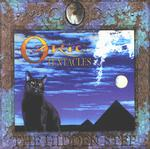

| Artist: | Ozric Tentacles |
| Title: | The Hidden Step |
| Label: | Stretchy Records STRETCHYCD3 |
| Length(s): | 48 minutes |
| Year(s) of release: | 2000 |
| Month of review: | [02/2002] |
| 1) | Holohedron | 5.49 |
| 2) | The Hidden Step | 7.47 |
| 3) | Ashlandi Bol | 6.04 |
| 4) | Aramanu | 5.59 |
| 5) | Pixel Dream | 6.21 |
| 6) | Tight Spin | 8.45 |
| 7) | Ta Khut | 7.05 |
The title track is more groovy. Again the music sounds quite hasty with lots of keyboards and fast paced drums. The middle part is rather violent with lots of keyboards intertwined. Later the music is of a more restful nature and easily glides by.
A wonderful title Aslandi Bol. Don't ask me whether it means anything, but it sounds good. The track itself has a Morish tinge with Spanish and later Arabic influences. Of course the music continues to be psychedelic. The Ozrics do make sure the every corner of the soundspectrum is used. At times I was reminded of Yanni, whose Out Of Silence for instance also used lots of this type of melody.
The Eastern influence stays in Aramanu. Slowly the music swells to include more and more sound, at the end it softly winds down again. Pixel Dream is rather groovy again, with plenty of drive and flow. It also includes some vocal effects.
Tight Spin is typical for the squeaky and bleepy space rock of the Ozrics (and their precursors Gong and Hawkwind). Cosmic influences, but also some pacey acoustic guitar and percussion make for a joyful ride. The closer Ta Khut opens with flute and in relaxed fashion. Then some acoustic guitar and again flute. I was much reminded of Peter Gabriel's Passion here.